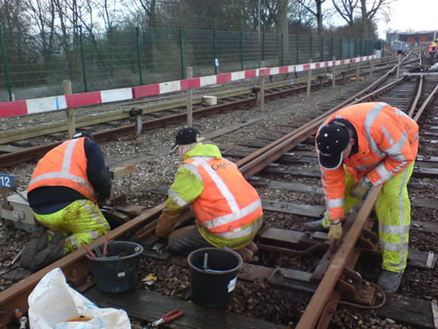

Metrorijtuigen 5301 en 5333 op transport en meer nieuws...
- zondag 30 november 2008 22:02
- Geschreven door Joachim
Metrorijtuig 5301, dat sinds begin december 2007 in de Centrale Werkplaats Kleiweg verbleef in verband met een midlife-proefrevisie, is gisteravond weer teruggekeerd op de lijnwerkplaats Waalhaven. Het metrorijtuig is op mechanisch gebied volledig gereviseerd. Daarnaast is de vloer gereinigd en voorzien van een coating.
Voordat rijtuig 5301 terugkeerde naar de Kleiweg, werd rijtuig 5333 gistermiddag door goederenvervoerder Railion opgehaald bij de NS-aansluiting van emplacement Waalhaven. Na een overbrengingsrit werd het metrorijtuig gisteravond omstreeks 21.00 uur geparkeerd op spoor 5 van de Centrale Werkplaats Kleiweg. Dit rijtuig komt ook in aanmerking voor de midliferevisie, die de komende weken zal plaatsvinden.

Vertrek van rijtuig 5333 op het NS-emplacement Waalhaven.
Vanaf het Rozenlaanviaduct, pal tegenover de Centrale Werkplaats Kleiweg, was een goed zicht op de activiteiten van gisteravond. Links staat rijtuig 5301 gereed voor vertrek naar de Waalhaven, op de voorgrond rijtuig 5333 op de traverse.
Een laatste check van rijtuig 5301, vlak voor vertrek.
Met trekkracht Railion-locomotief 6502 is de combinatie op weg naar het keergebied, om vervolgens koers te zetten naar de Waalhaven.
Rijtuig 5333 wordt gepositioneerd op de traverse.
Met behulp van een stalen balk onder het kopdraaistel wordt het metrorijtuig door twee kraanwagens van Tieleman op de plaats gehesen.
Nadat het rijtuig goed op de traverse staat, rolt de traverse naar het laatste spoor, spoor 5.
Het metrorijtuig wordt met het kopdraaistel weer in het spoor gezet.
Daarna wordt rijtuig 5333 de werkplaats ingetrokken.
Omstreeks 21.00 uur staat de trein op spoor 5 van de Centrale Werkplaats Kleiweg.
Werkzaamheden emplacement Waalhaven
Sinds 25 maart zijn ook de sporen 125 t/m 130 aan de oostzijde van emplacement Waalhaven niet meer bereikbaar voor metroverkeer. Dit in verband met de verlenging van de huidige opstelsporen aan de eerder genoemde zijde, met het oog op de komst van de nieuwe RandstadRail-rijtuigen (RSG3). Hierdoor verloopt het in- en uitrukproces zoveel mogelijk via wisselcomplex en keergebied Waalhaven II. Ook wordt er momenteel extra gebruik gemaakt van de opstelsporen ten zuiden van station Slinge. Overigens zijn de werkplaatssporen (135 t/m 131) wel bereikbaar vanaf de oostzijde, mits de toeleidende sporen op dat moment niet in het werkgebied vallen.
 Deel van de foto's met dank aan Jeepie.nl
Deel van de foto's met dank aan Jeepie.nl
Een overzicht vanaf de loopbrug over het emplacement. De sporen 121 t/m 124 zijn verlengd.

Het demonteren van de wisselaandrijving. Op de achtergrond spoor 144, dat berijdbaar blijft wanneer er geen werkzaamheden plaatsvinden.
Het demonteren van de wisselaandrijvingen wordt uitgevoerd door Cegelec Railinfra.
Overzichtsfoto van emplacement Waalhaven, met rechts de nieuwe en verlengde sporen.
Werkmaterieel op en rond de metrobaan. Het metroverkeer kan van deze sporen vanzelfsprekend geen gebruik maken.

In verband met de werkzaamheden wordt gebruik gemaakt van de opstelsporen ten zuiden van Station Slinge. Links wagendienst 905 en rechts wagendienst 911.
5255
Metrorijtuig 5255 heeft onlangs een technische revisie gekregen in de lijnwerkplaats Waalhaven. Vorige week werd het metrorijtuig door onder meer rijtuig 5237 opgehaald voor een overbrengingsrit naar de remise 's-Gravenweg.
De gereviseerde 5255 wordt opgepikt op spoor 135 van de remise Waalhaven.
Het metrorijtuig wordt "koud" gekoppeld meegenomen. In dit geval is rijtuig 5255 "dood" gemaakt en wordt deze door de andere rijtuigen voortgetrokken.